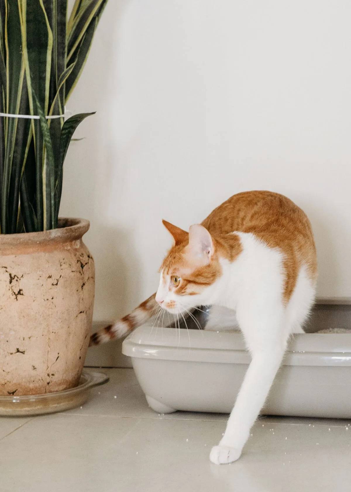
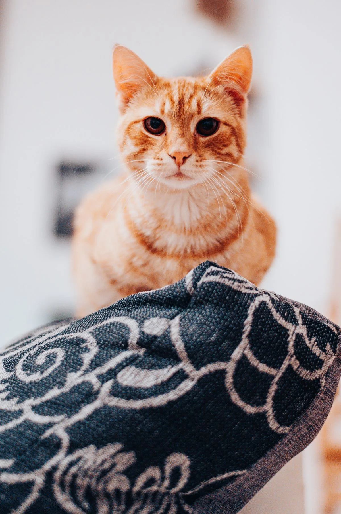

Automatic Litter Boxes, Tested at Home: What a Cat Owner Should Know Before You Buy
The short answer
An automatic litter box is worth it if you hate scooping, your cat will actually use it, and you have space for it. Check three things first: the size against your cat, the noise of the cleaning cycle, and what the waste bags and litter cost each month. A box the cat avoids is a very expensive cat bed.
Our pick: Litter-Robot 4 — the automatic litter box in our research, and the cat-specific pick with the clearest buyer question.
Check price on AmazonAffiliate link to be added after approval. No price shown here — check it on Amazon.

We may earn a commission if you buy through links on this page. As an Amazon Associate I earn from qualifying purchases.
What you need
Two verified pet-tech products from our research.
Litter-Robot 4
The automatic litter box in our research, and the biggest pet-tech listing on TikTok Shop in the research notes. The cat-specific pick with the clearest buyer question.
Watch out: Check the size against your cat and the space where it will live, and check the monthly cost of bags and litter. Some cats refuse a new box entirely.
Check price on AmazonAffiliate link to be added after approval. No price shown here — check it on Amazon.
Furbo 360° dog camera
A pet camera in our research — the camera angle that sells is watching your pet, not just feeding it. Included here as the camera option for pet owners.
Watch out: Check whether the features you want need a subscription. A camera that needs a monthly fee costs far more than the box price.
Check price on AmazonAffiliate link to be added after approval. No price shown here — check it on Amazon.
How to introduce an automatic litter box
- Put it next to the old box, not instead of it. Let the cat investigate for a few days with the old box still available. Never remove the only box a cat trusts.
- Use the same litter at first. A new box and a new litter at the same time is two changes too many. Change one thing, then the other.
- Run the cleaning cycle while you are home. Watch how the cat reacts to the noise and movement. If the cat hides, run it less often at first.
- Check the waste drawer on day one. Make sure it is actually catching waste and the bags fit. A drawer that jams on day one will jam every day.


Photos still needed
Photos are now in place for the hero, the cat-approaching step and the camera step (see Photo credits). Still missing — needs real at-home photos or brand permission:
- The waste drawer open, showing the bag
- The feeder camera view on a phone screen
- Real test photos of the litter boxes in this guide, taken at home
- Brand product photos — Whisker/Litter-Robot media kit checked 10 Nov 2026, no clear free-use terms, permission not yet obtained; Furbo’s kit sits inside Awin, which we have not joined
Comparison
| Product | Best for | What to check before you buy | Watch out for |
|---|---|---|---|
| Litter-Robot 4 | Not scooping every day | Size vs your cat, bag and litter cost | Some cats refuse a new box |
| Furbo 360° dog camera | Watching your pet while away | Subscription needed or not | Monthly fee can exceed the box price over time |
Troubleshooting
The cat will not use the new box
Go back to the old box, keep the new one beside it, and give it a week. Put a little used litter from the old box in the new one so it smells familiar. Never force the cat in.
The cleaning cycle is too loud
Run it on the quietest setting and only when the cat is in another room. Check the manual for a night mode or a delay setting.
The waste drawer smells
Empty it more often and check the bag seals properly. A drawer left for days will smell whatever the brand promises.
Frequently asked questions
How much does an automatic litter box cost to run?
The box is the big cost, then bags and litter every month. Add up a year of bags and litter before you buy — the running cost is part of the price.
Is it safe for kittens?
Check the manufacturer's own weight and age limits on the product page before you buy. Do not rely on a round-up article for safety limits.
Sources
- HomeTryout affiliate business opportunity report, 9 Nov 2026 — product scores (product-scores.csv).
- US pet spend $158B in 2025, pet tech market $10.3B in 2026 (reported in the opportunity report).